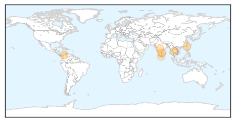
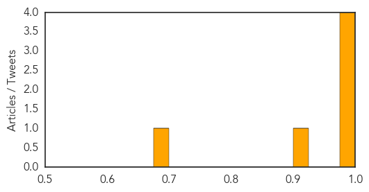

Dengue Fever
30-Day Web Trend
0 alerts, 0 warnings
30-Day Twitter Trend
7 alerts, 0 warnings
Article Locations
Article Confidences
Top Articles:
- 0.997
- State View: The case of dengue management and its can of worms
- 0.992
- Colombia: Zika case count now 129
- 0.989
- Hong Kong officials issue dengue fever update
- 0.985
- Halloween celebrations continue in Taiwan despite looming health threat
- 0.922
- India: Nine out of 10 people unaware dengue transmitted by mosquitoes
- 0.676
- Dengue hits MPs’ hostel: Speaker orders immediate cleanup
Top Tweets:
- 0.589
- Flavivirus news: Bengaluru woman tested positive for dengue fever - Business Standard: Bengalur... https://t.co/L6MUT3Bx8V pathogenposse
Hepatitis
30-Day Web Trend
4 alerts, 6 warnings

30-Day Twitter Trend
0 alerts, 0 warnings

Article Locations

Article Confidences

Top Articles:
- 0.989
- What is hepatitis C? Everything you need to know
- 0.927
- Why doctors say all baby boomers should be tested
- 0.907
- Health care workers at heightened risk of hepatitis C, Others news, Health News, AsiaOne YourHealth
- 0.841
- Hospital acting cautiously, hoping for no more hepatitis C cases
- 0.826
- Up to 4,800 McKay-Dee Hospital patients may have been exposed to hepatitis C
- 0.778
- Former McKay-Dee Hospital nurse believed to be connected to Hepatitis C exposure
- 0.688
- 4,800 McKay-Dee patients could have been exposed to hepatitis C
Top Tweets:
-
No tweets found for Oct 31, 2015